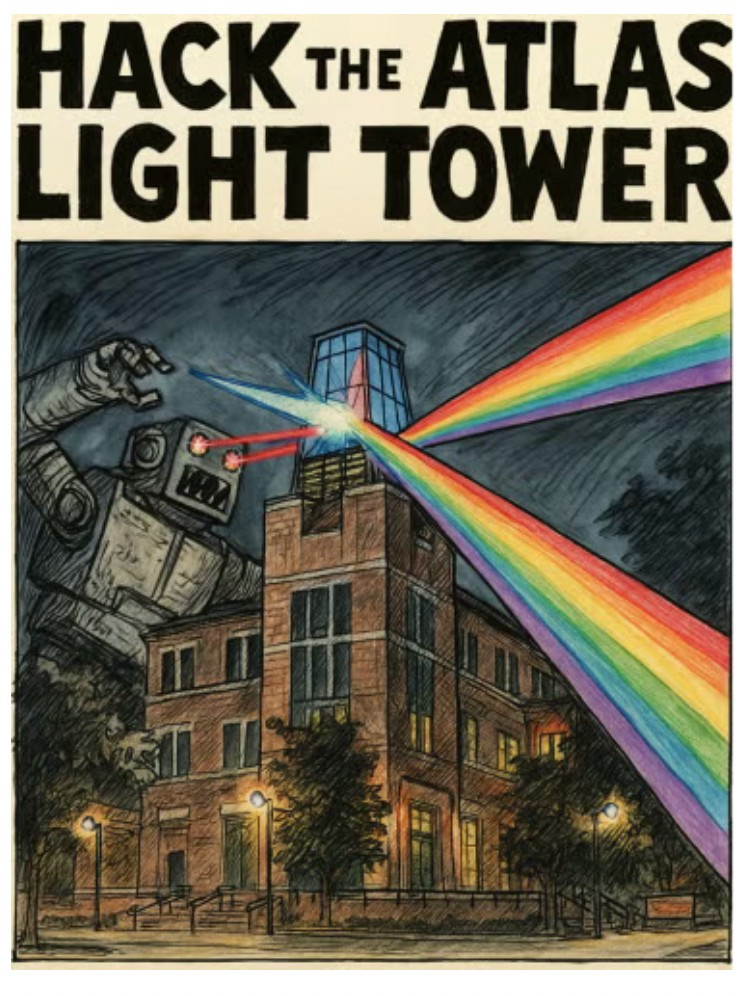
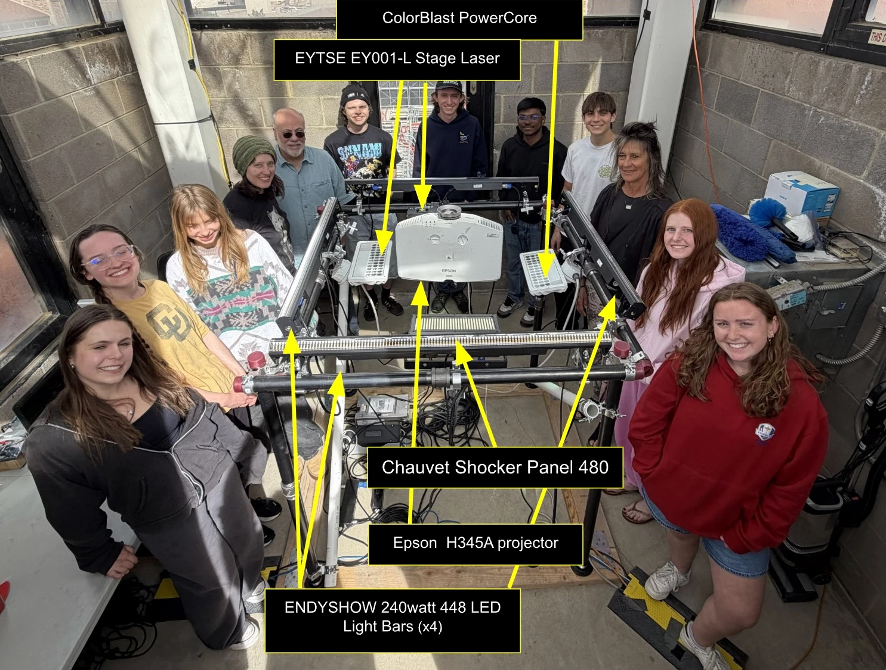

ATLAS Light Tower
Interactive Design / Creative Technology
Project Overview
Collaborated with a team of eight students to transform CU Boulder's ATLAS Light Tower into an interactive, large-scale lighting installation, with light shows controlled through a web-based interface. Lighting devices are connected via DMX512, with an Art-Net interface linking them to the campus network over Ethernet. A Linux computer in the tower runs QLC+ and xLights for lighting control, and its audio runs through a Marantz AV receiver to two waterproof speakers mounted outside the tower, plus a third inside for monitoring. A webcam inside the tower supports show development, debugging, and monitoring.


Building the Fixture
We built the lighting fixture by combining four ENDYSHOW 240-watt, 448-LED light bars with Chauvet Shocker Panel 480, ColorBlast PowerCore, and EYTSE EY001-L stage laser fixtures and an Epson H345A projector. We then mapped the lighting devices to DMX512 channels and programmed light shows from there in QLC+ and xLights.
My Light Show
- Song
- “Cornfield Chase” by Hans Zimmer, from Interstellar
- Tools
- QLC+ and DMX lighting channels
- Focus
- Lighting effects, timing, and transitions